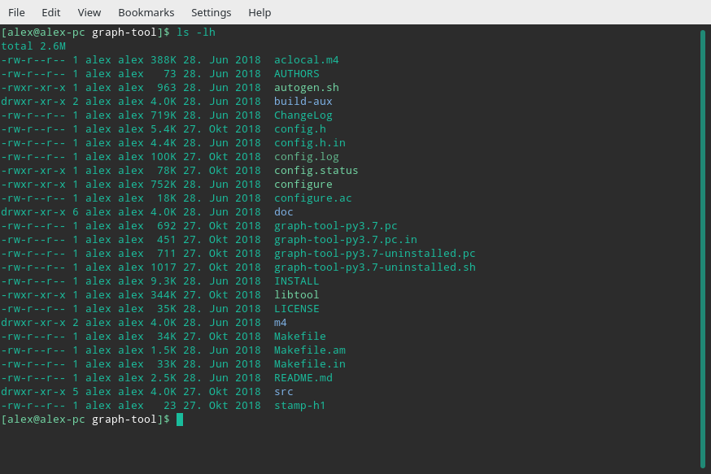

The ABC of Computational Text Analysis
#3 Setting up your Development Environment
Alex Flückiger
Faculty of Humanities and Social
Sciences
University of Lucerne
17 March 2022
Outline
- research workflow üìë
- interacting with computers ü™Ñ
- installation of programs üî®
Recap last Lecture
- textual data is challenging
- machine-readable data
Research means Organizing
How a computational approach
helps
- scripts as documentation üìù
- efficient automation ♻️
- “don’t repeat yourself”
- less error-prone ü§¶‚Äç‚ôÄÔ∏è ü§¶‚Äç‚ôÇÔ∏è
- reproducible üíØ
Organizing Literature
- manage literature in one place
- generating bibliographies
- collect with a click in your browser
 Zotero is a free, open-source
software for managing scientific literature
Zotero is a free, open-source
software for managing scientific literature
Two Trends in Computing
- everyday, mobile, cloud-centered, touch/click-based approach
- single-purpose application
- smartphones + tablets
- engineering, open-source, machine-oriented approach
- powerful due to modularity
- workflow for data science
(see also Healy
2019)
 Apple Original iPhone (2007)
Apple Original iPhone (2007)
Operating Systems (OS)
Between hardware and
programs
- Microsoft Windows
- macOS
- Linux-based systems ü§ì
User Interfaces
graphical user interface
(GUI)

command line interface (CLI)

“An
awesome Programmer saves the World”
Human-Machine Interaction
How to tell the computer
effienctly
- text commands instead of clicks
- similar to human languages
- syntax (form)
- semantics (meaning)
- computers are literalists
Programming
- command languages
- Bourne-Again shell (Bash), since 1989
- programming languages
- Python, R, Java, C++ etc.
- instructions → program ≡ algorithm
Package Manager
Open-Source is a Mindset
Standing on the shoulders
of giants
- free + open software
- cross-platform portability
- collaboration
- helpful community
Resources everyone is using
Learning by doing, doing by Googleing.
ü§∏‚Äç‚ôÄÔ∏èü§∏‚Äç‚ôÇÔ∏è
Backup üëπ
You don’t need it until you desperately need it!
Setting up your Development
Environment
Installation
- Python 3.8
- packages for NLP + visualization
- Tesseract
- various Bash tools
- VS Code Editor
üëâ Follow the installation
guide for your OS.
VS Code Editor
The Microsoft Word for
coding
- powerful integrated development environment (IDE)
- cross-platform
- interactive analysis
 Write your first Python script in VS Code
Write your first Python script in VS Code
First Steps in Python
Learn Python with interactive tutorials
Readings
optional: pimp your workflow
Healy, Kieran. 2019. “The Plain Person’s Guide to Plain Text Social
Science.” online.